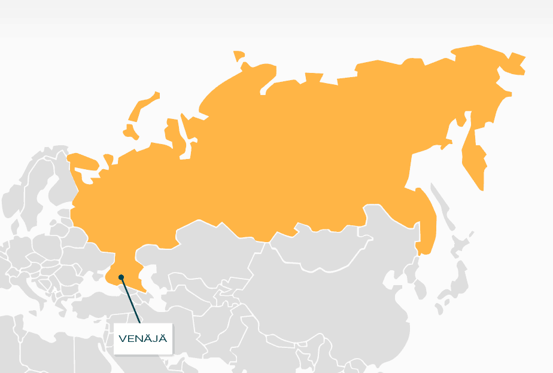
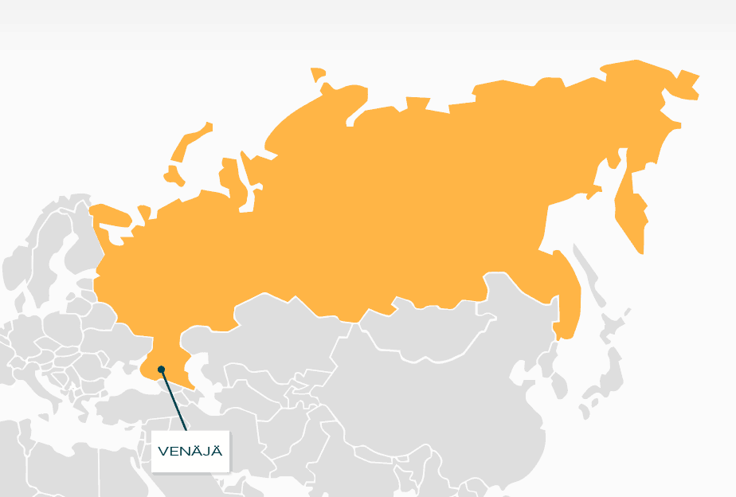

 Venäjä on liittovaltio, joka sijaitsee Itä-Euroopassa ja Pohjois-Aasiassa. Maan pääkaupunki on Euroopan puolella sijaitseva Moskova. Nykyinen Venäjän federaatio perustettiin 1990-luvun alussa, kun Neuvostoliitto hajosi.
Venäjän federaatio on vuoden 1993 perustuslain mukaan puolipresidentiaalinen tasavalta.
Se on liittovaltio, joka koostuu 83 liittovaltiosubjektista.
Venäjän rajanaapureita ovat Norja, Suomi, Viro, Latvia, Liettua, Puola, Valko-Venäjä, Ukraina, Georgia, Azerbaidžan, Kazakstan, Kiina, Mongolia ja Pohjois-Korea.
Lisäksi Japaniin, Etelä-Koreaan ja Yhdysvaltojen Alaskaan on vain vähän merimatkaa.